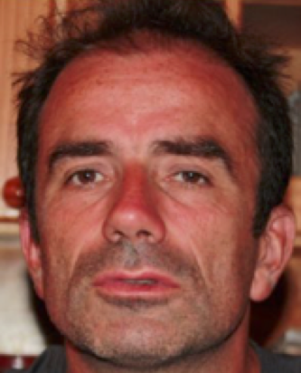

Précédentes éditions : 2010, 2011, 2012, 2013 et 2014
Objectifs
Les réseaux de capteurs autonomes sans fils permettent de mesurer et/ou de capturer des données concernant l’environnement immédiat, et potentiellement sur une large échelle. Ces réseaux de capteurs soulèvent un intérêt grandissant de la part des industriels ou d’organisations civiles où la surveillance et la reconnaissance de phénomène physique est une priorité. Citons parmi les applications possibles celles concernant l’environnement (agriculture, eau, forêt, incendies, pollutions, ...) et la ville urbaine, la santé (personnes agées, veille sanitaire dans les troupeaux), la réponse aux catastrophes (tremblements de terre, inondations), la surveillance de processus et/ou de sites industriels et d’ouvrages de génie civil.
Les événements et catastrophes récents montrent que ces réseaux de surveillance peuvent avoir un rôle très important pour la prévention, mais aussi pour l’organisation des secours et le suivi après catastrophe de l’évolution des phénomènes. Dans ces cas, l’interaction entre plusieurs réseaux et/ou technologies de surveillance est également souhaitable : robots, drônes, smartphones, ...
Cette école internationale est divisée en deux parties :
3 jours de formation aux outils de base pour la mesure environnementale en utilisant des réseaux de capteurs,
2 jours d'exposés scientifiques permettant la rencontre entre les personnes interessées par l'utilisation de ces technologies dans le cadre de leurs activités de recherche.
Elle est largement ouverte vers les pays du Sud (nous contacter pour voir comment financer votre deplacement).
Lieu
Cette ecole internationale se déroulera sur le campus de l'IRD (Institut de Recherche pour le Développement), Centre Nord à Bondy du 9 au 13 mai 2016 au sein de l'équipe de recherche UMMISCO.
32, Avenue Henri Varagnat. Bondy, France
Comité d'organisation
-
Christophe Cambier, UMI UMMISCO, IRD/UPMC, France
-
Nicolas Marilleau, UMI UMMISCO, IRD/UPMC, France
-
Bertrand Granado, LIP6, Université Pierre et Marie Curie(UPMC), France
-
Congduc Pham, LIUPPA/T2I, Université de Pau et des Pays de l’Adour (UPPA), France
-
Bernard Pottier, LabSTICC, Université de Bretagne Occidentale (UBO), France
-
Serge Stinckwich, UMI UMMISCO, IRD/UPMC, France
Conférenciers
-
9 mai 2016 Tutoriel 1 - Introduction aux plateformes Arduino et Raspberry Pi
Serge Stinckwich Page web
Serge Stinckwich est enseignant chercheur dans l'équipe UMMISCO.
-

9 mai 2016 Tutoriel 2 - Modèles physiques, simulation et observation
Bernard Pottier Page web
Bernard Pottier est professeur d'informatique. Il a travaillé à la réalisation d'outils de conception d'architectures de traitement de 1990 à 2007, dans le cadre de plusieurs projets nationaux et internationaux. Depuis 2008, ses recherches sont tournées vers les réseaux de capteurs sans fil et les méthodes de conception d'applications sociétales et environnementales.
-
10 mai 2016 Tutoriel 3 - Technologies Long-Range pour Réseaux de capteurs et Internet des Objets
Cong Duc Pham Page web
Congduc Pham est professeur d’informatique à l’Université de Pau et Pays de l’Adour. Ses domaines de recherche sont les réseaux de communication et la qualité de service. Depuis plusieurs années, il s’intéresse aux réseaux de capteurs sans-fils et aux applications critiques de surveillance.
-
11 mai 2016 Tutorial 4 - Introduire des données de capteurs mobiles dans la simulation
Nicolas Marilleau Page web
Nicolas Marilleau est ingénieur de recherche à l’UMI 209 UMMISCO de l’IRD (Institut de Recherche pour le Développement) depuis 2006, chercheur associé (depuis 2010) à Femto-ST (Université de Franche-Comté). Ses recherches s’inscrivent dans les domaines des systèmes répartis, de la collaboration et de la modélisation-simulation des systèmes complexes tels qu’ils sont abordés en écologie, en géographie ou robotique. Elles présentent l’originalité de considérer à la fois la distribution des compétences et la distribution du calcul. L’enjeu est de développer des concepts et outils afin de rendre accessible les procédés de modélisation-simulation pour une communauté la plus large possible de scientifiques et d’opérationnels.
-
12 mai 2016 Techniques chimiques et biologiques pour un diagnostic de la qualité de la ressource en eau et des impacts environnementaux et sanitaires associés. Cas du bassin versant urbanisé de la Méfou (Centre Cameroun)
Perrine Branchet Page web
TBA
-

12 mai 2016 Systèmes embarqués bio-médicaux: le cas des capsules vidéo-endoscopique
Bertrand Granado Page web
TBA
-
12 mai 2016 Fablabs et capteurs
Christian Simon Page web
Christian Simon est maître de conférences en Chimie à l’UPMC. Après 10 ans consacrés à la modélisation des liquides par dynamique moléculaire, il est en charge pendant 3 ans des questions de déchets radioactifs et de sûreté nucléaire au Ministère de l’Enseignement Supérieur et de la Recherche. C’est alors qu’il découvre le potentiel des sciences participatives pour l’environnement, appuyées sur les réseaux de FabLabs et Hackerspaces. Il initie donc le projet le FabLab de Sorbonne Universités (avec V. Dupuis). Depuis 2013, il mène le projet OpenGeiger, programme de science participative dédié à la mesure de la radioactivité ambiante.
-
12 mai 2016 Minimisation de la consommation d'énergie des réseaux de capteurs sans fil dans les applications de couverture de cibles
Diane Tchuani Tchakonte Page web
TBA
-
12 mai 2016 Station Météo Autonome et Connectée
Moussa Diallo Page web
Moussa DIALLO est né à THIES, Sénégal. Il a obtenu un diplôme d’ingénieurs en Electronique Télécommunications et Instrumentation à l’ENSI de Limoges (France) en 2007, et un Master Recherche en circuit, système, micro et nanotechnologies pour les télécommunications HF et Optiques à l’Université de limoges en 2007. En octobre 2010, il a obtenu un doctorat en Télécommunications à l’INSA de Rennes (France). Il est actuellement enseignant chercheur à l'ESP. Ses thématiques de recherche portent sur le multiplexage spatial, l’estimation de canal et feedback dans les systèmes de transmission multi antennes MIMO, les réseaux de capteurs, la géolocalisation et le prototypage.
-
12 mai 2016 Détection de feu d’appartement en utilisant un réseau de capteurs
Nguyen Dai Tho Page web
Dai Tho NGUYEN a obtenu un Doctorat en Informatique à l’Université de Technologie de Compiègne, France. Il est actuellement enseignant-chercheur à l’Université de l’Ingénierie et de la Technologie (une université membre de l’Université Nationale du Vietnam à Hanoi), où il dirige le Laboratoire de Sécurité de l’Information. Il intervient dans plusieurs instituts universitaires au Vietnam comme l’Institut Francophone International, l’Institut des Techniques Cryptographiques et l’Institut de la Sécurité Populaire. Il est également associé à l’UMI UMMISCO 209 de l’IRD. Ses domaines de recherche sont la sécurité des réseaux, les réseaux sans fil, les systèmes pair-à-pair, et l’algorithmique distribuée.
-
12 mai 2016 Disaster Preparedness: Technological Challenges
Onil Goubier Page web
-
12 mai 2016 Random Road Traffic Generator: From Traffic sensor to model
Saad Touhbi Page web
-
12 mai 2016 WAZIUP: une plateforme d’innovation ouverte sur l’Internet des Objet et le Big data en Afrique Sub-saharienne
Ousmane Thiare Page web
Ousmane THIARE est Professeur Titulaire d’Informatique à l’Université Gaston Berger de Saint-Louis du Sénégal. Ses domaines de recherche sont les systèmes distribués. Depuis plusieurs années, il s’intéresse aux réseaux de capteurs sans fil et ses applications.
Programme
Le programme est en cours de constitution (contacter Serge dot Stinckwich at upmc dot fr pour en savoir plus).
| Time | Slot | Description |
|---|---|---|
| 9 mai 2016 | Tutoriel 1 - Introduction aux plateformes Arduino et Raspberry Pi UMMISCO, IRD/UPMC | Introduction aux outils logicles et matériels de base des plateformes Arduino et Raspberry Pi |
| 9 mai 2016 |
Tutoriel 2 - Modèles physiques, simulation et observation
Labsticc, Université de Brest
|
Les réseaux de capteurs (RdC) réalisent une observation distribuée de grandeurs physiques. Ce sont des outils de mesure complexes réalisant un échantillonnage. A ce titre, la chaine d'acquisition inclut des mesures locales, la synthèse de diagnostics distribués, l'alimentation de bases de connaissances. Les fréquences d'acquisition, les délais de décision constituent un élément de variabilité du procédé., les échelles des applications allant du minuscule à l'échelle continentale. Nous montrons une méthode d'étude de déploiements centrée sur le processus observé, à une échelle géographique moyenne. Des outils permettent de centrer l'observation sur une zone particulière, choisie sur des cartes ou des photos. Cette zone est segmentée pour former des systèmes cellulaires en vue de simulations. Nous montrons comment les mesures des RdC et des données externes (météo, élévations) sont intégrées dans ces systèmes, et les bénéfices qui peuvent en découler pour la conception des liens radio (ligne de vue) et l'adéquation entre le RdC et le processus observé. TP sur les outils LabSTICC. |
| 10 mai 2016 | Tutoriel 3 - Technologies Long-Range pour Réseaux de capteurs et Internet des Objets Université de Pau | It is widely accepted that the Era of IoT can potentially connect billions of sensors, devices, equipment, systems, etc. In turn, the challenge is about driving business outcomes, consumer benefits, and the creation of new value. While benefits of IoT are clearly stated for increased process efficiency through automation & optimization, the deployment of such devices in a large scale is still held back by technical challenges. However, there are a number of small revolutions that are rapidly turning IoT into reality. In this presentation we will present how new contributions in the domain of hardware, communication, data storage and data-processing definitely make the IoT paradigm to happen with an unpreceding level of flexibility and cost effective implementations. Regarding communications, we will particularly present Semtech's LoRa radios and how gateways and end-devices can be built from off-the-shelves components for low-cost, long-range and ad-hoc Internet of Things deployment. |
| 11 mai 2016 | Tutorial 4 - Introduire des données de capteurs mobiles dans la simulation UMMISCO, IRD | La simulation de phénomènes complexes requière de plus en plus l’introduction de données de terrain en vue de reproduire plus fidèlement les dynamiques observées et d’évaluer des scénarios répondant aux problématiques de terrain (pollution, secours, congestion, etc). L’enjeu de ce cours sera justement de proposer une chaîne logicielle allant du capteur mobile au simulateur aux travers de Cours et de Travaux Pratiques. Dans un premier temps, nous verrons comment connecter un capteur à un simulateur à base d’agent sous couvert d’un exemple concret. Pour cela nous utiliserons la plate-forme GAMA et la technologie Raspberry. Ensuite nous nous familiariserons aux technologies et outils utilisés pour les drones. Nous les manipulerons, et si le temps le permet, nous réaliserons un TP en extérieur portant sur les capteurs mobiles. |
| 12 mai 2016 | Techniques chimiques et biologiques pour un diagnostic de la qualité de la ressource en eau et des impacts environnementaux et sanitaires associés. Cas du bassin versant urbanisé de la Méfou (Centre Cameroun) LGEI- Eau, Mines d'Ales | La capitale du Cameroun, Yaoundé, voit sa démographie et son emprise urbaine croître de façon très importante depuis quelques décennies. Cette expansion urbaine exerce une pression sur la ressource en eau du bassin versant de la Méfou, d’autant plus que les infrastructures hydrauliques et d’assainissement sont inadaptées ou manquantes tandis que les surfaces sont de plus en plus imperméabilisées, ce qui contribue aux inondations urbaines et au transfert des polluants issus des activités domestiques, industrielles et agricoles vers les cours d’eau. |
| 12 mai 2016 | Systèmes embarqués bio-médicaux: le cas des capsules vidéo-endoscopique LIP6, UPMC | Depuis que le pacemaker a vu le jour à la fin des années 1950, les systèmes électroniques bio-médicaux n’ont eu de cesse de se développer à la fois pour réparer l’homme mais aussi pour accroître ses capacités. Les capsules vidéo-endoscopiques sont apparues au débuts des années 2000 et font partie de ces systèmes électroniques. Elles sont à la fois des instruments de mesures et des mini robots prêt à réaliser des prélèvements à l’intérieur du tube digestif. Nous présenterons ici les travaux de recherches menés dans le domaine spécifique des capsules vidéo endoscopiques au niveau international et au sein de l’équipe Syel du LIP6 de l’UPMC et nous tenterons de voir si un jour nous aurons un gastro-enterologue à l’intérieur de nos intestins. |
| 12 mai 2016 | Fablabs et capteurs UPMC | Il existe diverses modalités de déploiement des réseaux de capteurs pour la mesure environnementale. L’approche des sciences participatives est particulièremet intéressante, car elle cherche à mettre sur pied simultanément les capteurs, le réseau, la communauté d’utilisateurs, de collecteurs de données et les développeurs. Le Réseau des FabLabs est un réseau mondial solidement établi d’ateliers de fabrication/prototypage numériques avec des outils, des méthodes et une culture partagée. Nous suggérons qu’utiliser les FabLabs comme lieu du co-développement des réseaux de capteurs peut accélérer la dissémination des initiatives de mesures environnementales. |
| 12 mai 2016 | Minimisation de la consommation d'énergie des réseaux de capteurs sans fil dans les applications de couverture de cibles Université de Yaoundé I | TBA |
| 12 mai 2016 | Station Météo Autonome et Connectée UCAD, Sénégal | Vu les moyens de télécommunications limités dans notre sous-région, il est coûteux et difficile de transmettre des données de n’importe où. En effet, la plupart des stations de mesure du Sénégal ne sont pas connectées. Le déplacement d’une personne est nécessaire pour prélever les paramètres et la transmission s'effectue souvent par email ou par téléphone. Pour automatiser la surveillance environnementale de jour comme de nuit, nous avons mise en œuvre une station autonome en énergie, connectée et pouvant embarquer plusieurs capteurs. La station est adaptée au contexte local et peut être déployée partout au Sénégal. |
| 12 mai 2016 | Détection de feu d’appartement en utilisant un réseau de capteurs VNU, Vietnam | Nous proposons un algorithme pour la détection précoce de feu d’appartement basée sur les données de température et de lumière collectées par un réseau de capteurs sans fil. La raison pour l’utilisation de capteurs est due à leurs faibles prix et à leur grande disponibilité. L’originalité de l’algorithme proposé réside dans le changement automatique de seuil pour la détection de température excessive et l’utilisation des fluctuations de lumière comme indicateur de feu. Nous avons testé notre algorithme sur de vrais capteurs connectés en réseau. Les résultats expérimentaux montrent qu’il est en général plus efficace que les autres méthodes typiques d’utilisation de réseaux de capteurs pour la détection de feu (en termes d’équilibre entre le délai de détection, le taux de fausses détections, et le taux d’omissions). |
| 12 mai 2016 | Disaster Preparedness: Technological Challenges France | Disaster preparedness is an important phase in disaster risk reduction management, with the main objective of building more resilient communities in disaster-prone areas and to reduce human and economic losses. This phase includes knowledge acquisition (learning from the past, experience, monitoring, ...), knowledge building/anticipation (studies and analysis, modelling, simulations, ...), and planning actions (policies, standard operating procedures, ...). This is a complex phase where information and communication technologies play an important role, including the use of wireless sensor networks, information systems and modelling tools. We will present the essential components of this phase and the challenges related to the use of digital technologies. |
| 12 mai 2016 | Random Road Traffic Generator: From Traffic sensor to model Marocco | Over the last years, traffic has shown a rapid growth due to the increase of mobility especially in the urban areas. Traffic simulation is always a great solution to evaluate the traffic conditions of an area. Microscopic simulations are one of the approaches that are used and provide detailed interactions between elements on the road. Our work consists on giving more detailed access to microscopic simulation by creating a Random Road traffic generator. This work is done in Marrakech and a mobile application was developed to obtain data in order to define a model or traffic generation in this city. This presentation will give detailed approach from data collection and the usage of the application, to the data modeling and information extraction that would lead to the first basis of the traffic generation. |
| 12 mai 2016 | WAZIUP: une plateforme d’innovation ouverte sur l’Internet des Objet et le Big data en Afrique Sub-saharienne Marocco | Le projet WAZIUP, à savoir plateforme d’innovation ouverte sur l’Internet des Objet et le Big data en Afrique Sub-saharienne est un projet collaboratif de recherche qui utilise une technologie de pointe basée sur l’Internet des objets et le Big Data dans le but d’améliorer les conditions de travail dans l'écosystème en Afrique Sub-saharienne. Tout d'abord, WAZIUP opère en impliquant les agriculteurs et les éleveurs dans la définition des spécifications de la plateforme avec une cible sur la validation des cas. Deuxièmement, tout en abordant les défis qui sont propres à l'écosystème rural, il engage également l'écosystème des TIC florissant dans les pays en développement, en favorisant de nouveaux outils et de bonnes pratiques, l'esprit d'entreprise et les start-ups. Destiné à stimuler le secteur des TIC, WAZIUP propose des solutions durables dans le long terme. Le consortium de WAZIUP implique 7 partenaires issus de 4 pays africains et des partenaires de 5 pays de l'UE combinant développeurs d'affaires, des experts en technologie et les entreprises locales africaines opérant dans l'agriculture et les TIC. Le projet comprend également des centres régionaux dans le but de promouvoir les résultats à la base la plus large dans la région. |